A 圍村 -- Wai Tsuen -- is a historic area of Hong Kong. They were established people that moved from China to Hong Kong back in the 1800s to avoid piracy. Now, it's become kind of a historical institution where connections run deep. They're similar to the Clans of Singapore. One of my professors lives in the wai tsuen and invited me over once. It has an Old-Chinese nostalgia to it; the small alleyes lined by gutters, the stray dogs, and the low-rise three story buildings built out of some sturdy but unflattering material. All around I'm surrounded by mountains, and it reminds me of Taiwan's aboriginal villages in the mountains. If you stand still, the Hong Kong Traffic is a small echo.
National Day is celebrated on October 1st. It's not really a national day for Hong Kong since it's the Chinese national day, but, due to Two Systems, Hong Kong observes it. It's really a just another day off. In some wai tsuen districts with strong connections to Mainland China -- what they would call "red" villages -- there are massive celebrations. My professor asked me to help out one day in there with setup and the running of activities since she lives in the village. It was community service of sorts, but it was probably one of the most Hong Kong experiences I've had.
I felt a bit left out since I didn't speak Cantonese, but, whatever. I think simply being in that village and seeing this mafia-esque village come to life was pretty cool. There were the elders who were walking around and setting up. Volunteers from within the wai tsuen who were mostly aunties were practicing some coordinated dance to loud music. Young kids and teenagers came back from overseas colleges, putting on the classic "ugh, family event" faces as they received scholarship money from wtihin the Village. A contingency was sent out from the People's Liberation Army; I've no idea why. Every table -- and there were about two hundred or more, each seating 15 people -- eating 盆菜, Pun Choi, which is similar to an already-cooked hot pot full of various things like fatt meats, taro, potatoes, chicken wings, and whatever else. The catering team pulled up in a truckful of of them. There were fireworks, and some tacky Chinese singing show with a man dressed in all leather. Later, a middle-aged lady dressed in feathers and heavy make up sang some high pitched Chinese opera. Later, some awards presented to some old people. At one point, I even went on the main stage and served them all tea. I felt fucking awkward but, it will forever remain a great memory of my time here in Hong Kong. The best part was watching from afar, sitting on my table eating that pun choi, as the most Chinese thing unfolded before my eyes. Pictures below.
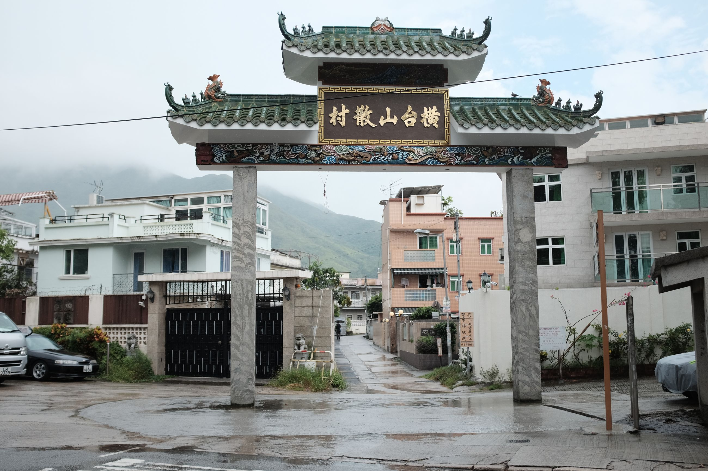 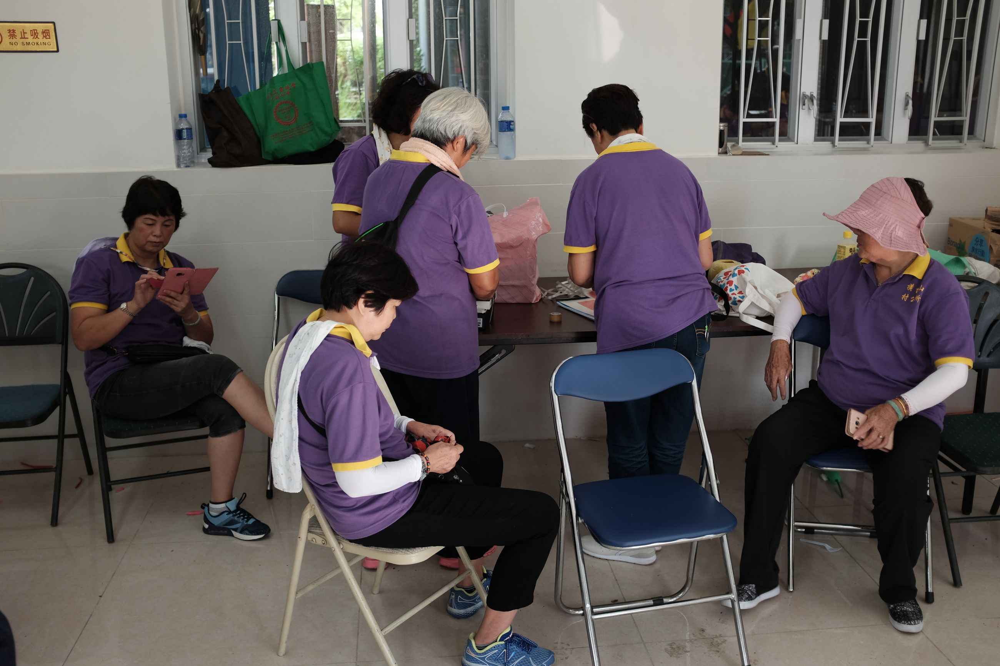 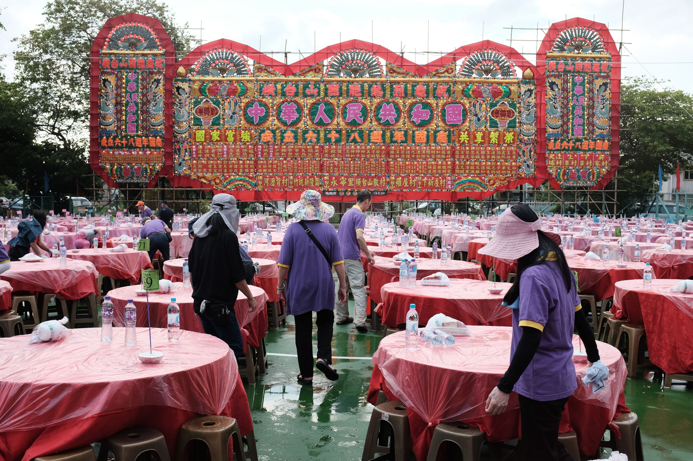 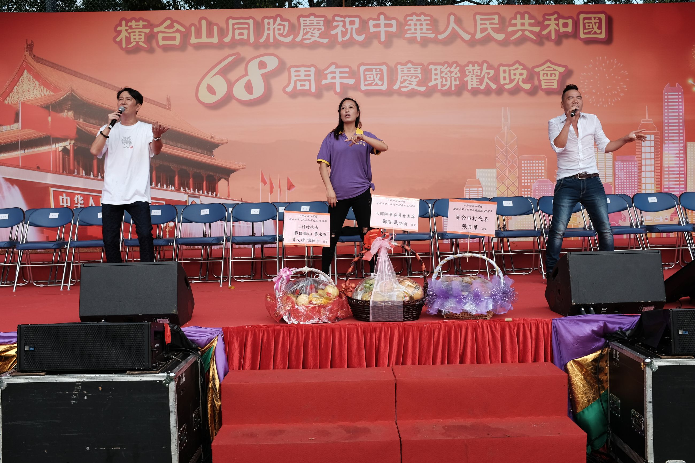 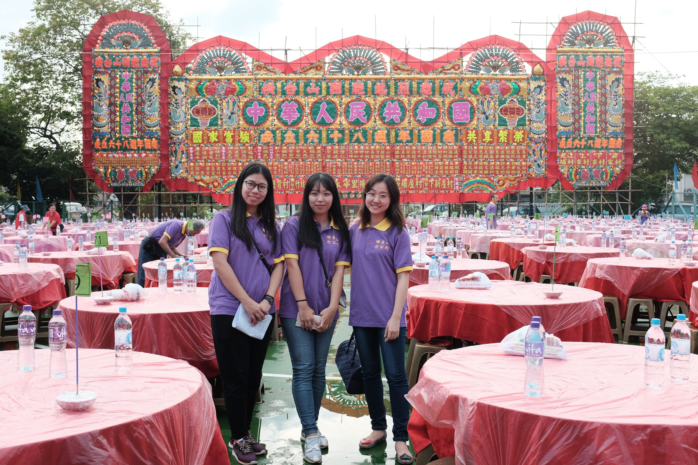 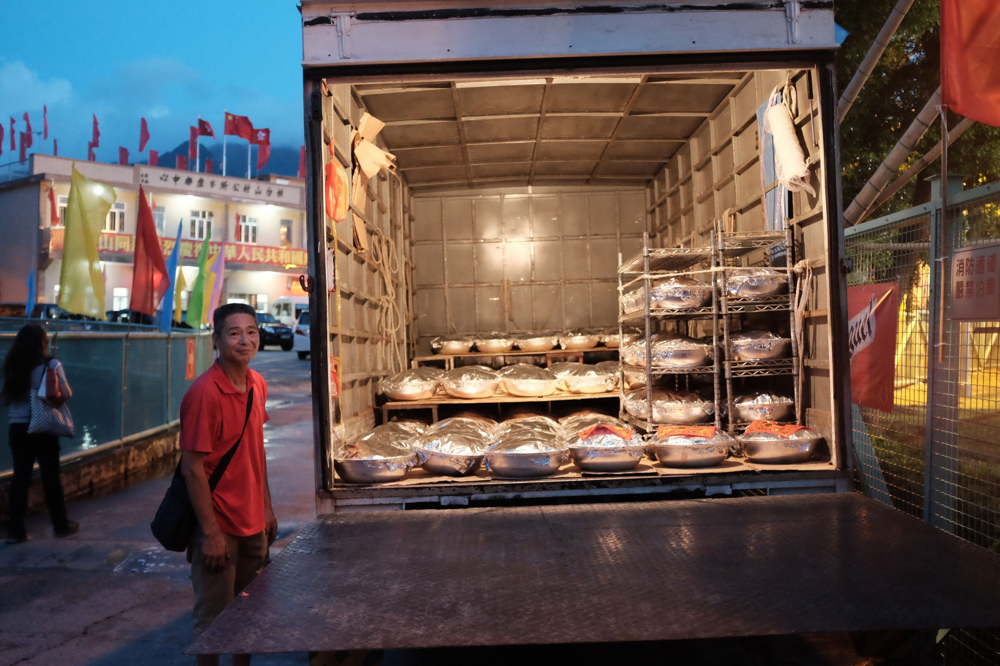 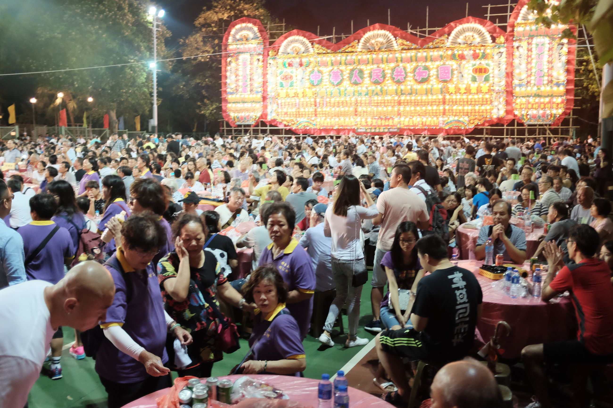 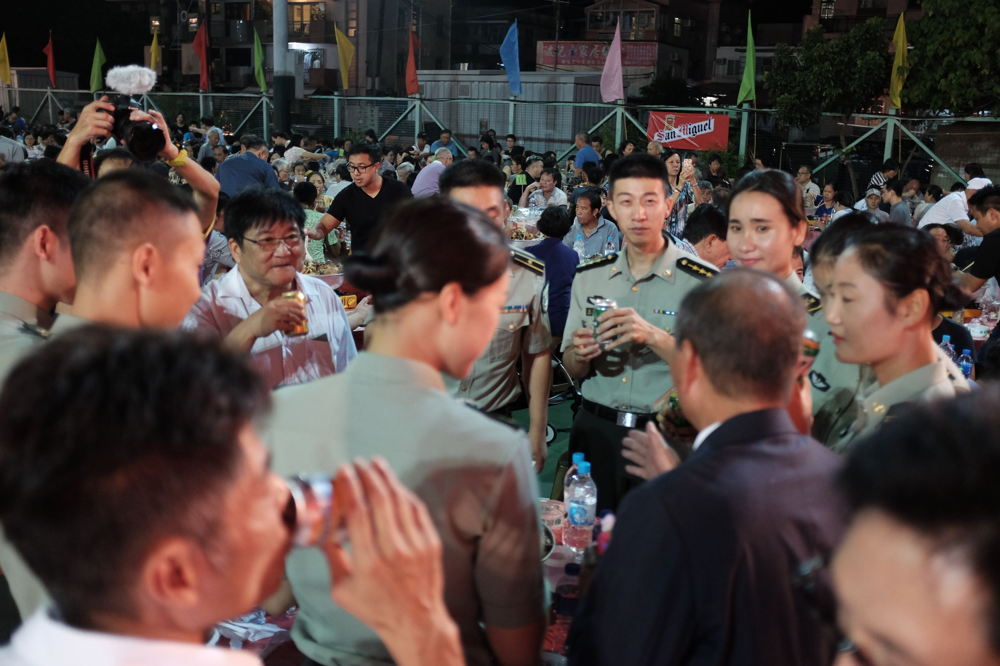 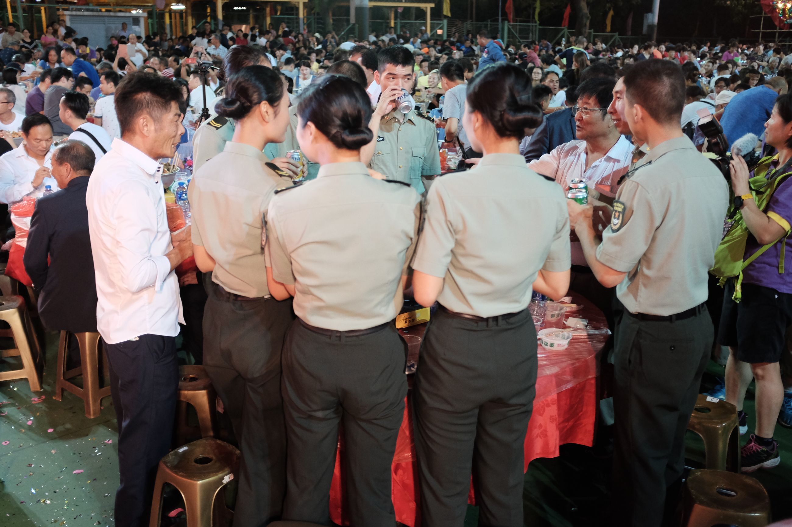 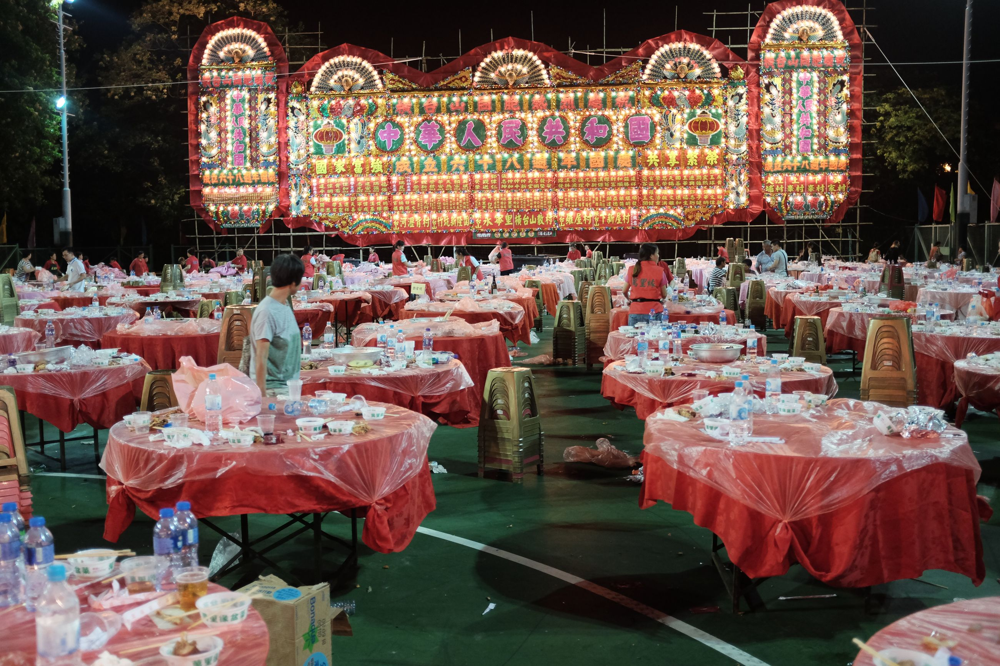 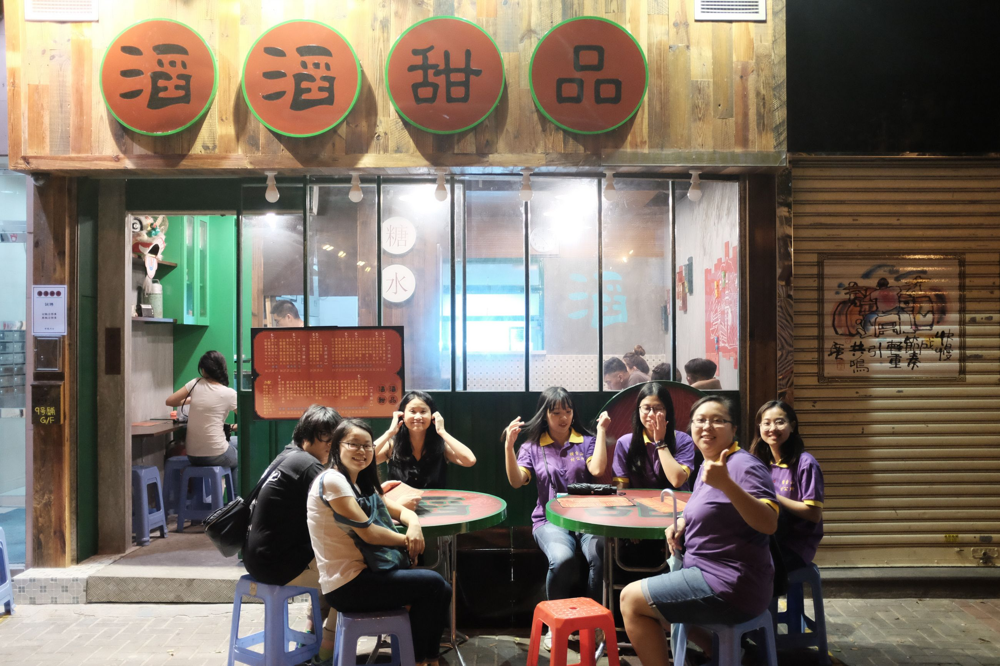